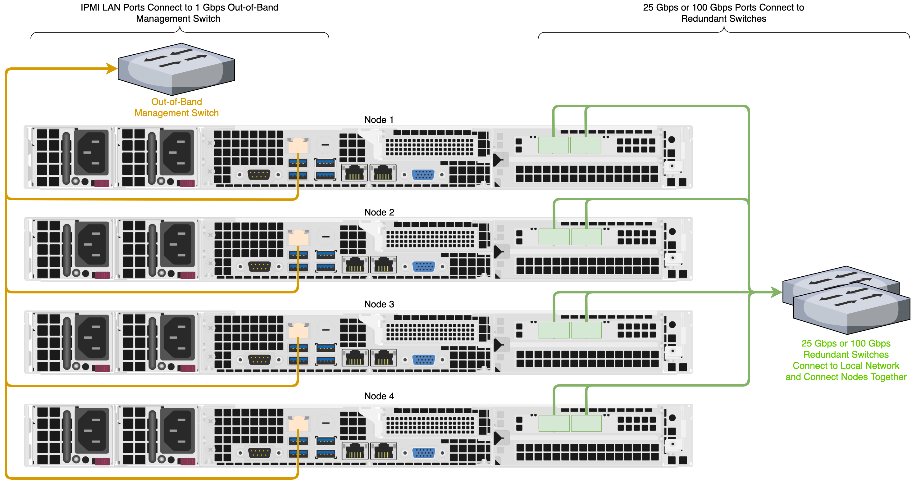

This section explains how to network a Supermicro 1014S cluster, lists the networking prerequisites, outlines the recommended configuration, and explains how to connect to redundant switches or to a single switch.
The Supermicro A+ WIO 1114S-WN10RT platform has reached its End of Life (EoL) on May 23, 2025. For more information about End of Platform Support (EoPS), contact Supermicro support.
To identify the
eth port, run the following command:for i in /sys/class/net/eth*; \
do echo $i; \
cat $i/device/uevent | \
grep -i pci_slot; \
donePrerequisites
Before you create your Qumulo cluster, if your client environment requires Jumbo Frames (9,000 MTU), configure your switch to support a higher MTU.
Your node requires the following resources.
-
A network switch with the following specifications:
-
Ethernet connectivity
-
Fully non-blocking architecture
-
IPv6 capability
-
-
Compatible networking cables
-
A sufficient number of ports for connecting all nodes to the same switch fabric
-
One static IP for each node, for each defined VLAN
Recommended Configuration
This platform uses a unified networking configuration in which the same NIC handles back-end and front-end traffic. In this configuration, each networking port provides communication with clients and between nodes. You can connect the NIC’s ports to the same switch or to different switches. However, for greater reliability, we recommend connecting both ports on every node to each switch.
We recommend the following configuration for your node.
-
Your Qumulo MTU configured to match your client environment
-
Two physical connections for each node, one connection for each redundant switch
-
One Link Aggregation Control Protocol (LACP) port-channel for each network on each node, with the following configuration
-
Active mode
-
Slow transmit rate
-
Access port or trunk port with a native VLAN
-
-
DNS servers
-
A Network Time Protocol (NTP) server
-
Firewall protocols or ports allowed for proactive monitoring
-
Where
Nis the number of nodes,N-1floating IP addresses for each node, for each client-facing VLAN
Connecting to Redundant Switches
For redundancy, we recommend connecting your cluster to dual switches. If either switch becomes inoperative, the cluster is still be accessible from the remaining switch.
-
Connect the two NIC ports on your nodes to separate switches.
-
The uplinks to the client network must equal the bandwidth from the cluster to the switch.
-
The two ports form an LACP port channel by using a multi-chassis link aggregation group.
-
Use an appropriate inter-switch link or virtual port channel.
Connecting to a Single Switch
You can connect a your cluster to a single switch. If this switch becomes inoperative, the entire cluster becomes inaccessible.
-
Connect the two NIC ports on your nodes to a single switch.
-
The uplinks to the client network must equal the bandwidth from the cluster to the switch.
-
The two ports form an LACP port channel.
Four-Node Cluster Architecture Diagram
The following is the recommended configuration for a four-node cluster connected to an out-of-band management switch and redundant switches.
